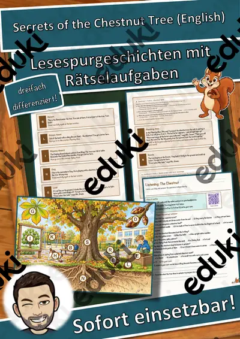
Secrets of the Chestnut Tree – Lesespurgeschichte mit Rätselaufgaben auf Englisch (Klasse 8)
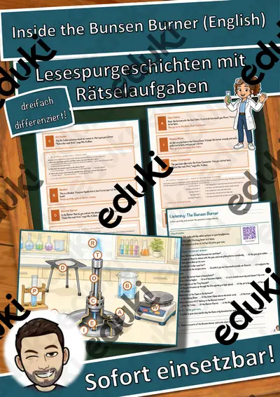
Inside the Bunsen Burner – Lesespurgeschichte mit Rätselaufgaben auf Englisch (Klasse 9)
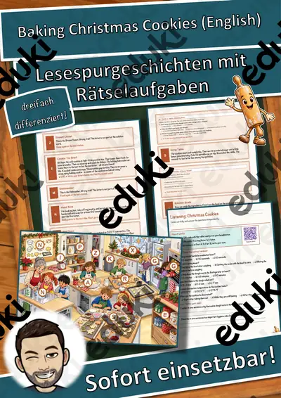
Baking Christmas Cookies – Lesespurgeschichte mit Rätselaufgaben auf Englisch (Klasse 8)
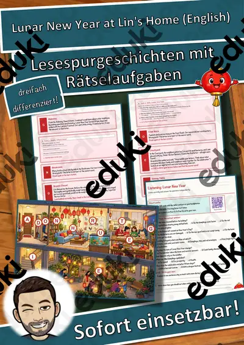
Lunar New Year at Lin's Home – Lesespurgeschichte mit Rätselaufgaben auf Englisch (Klasse 8)
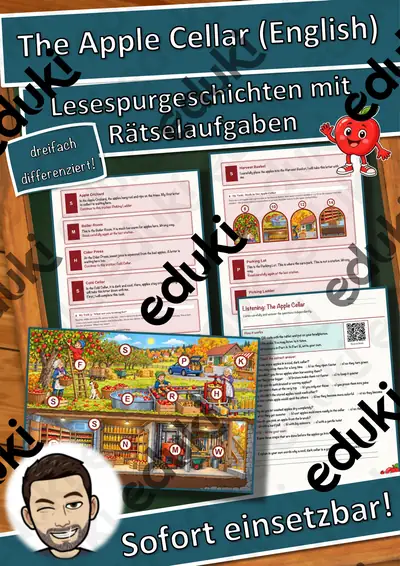
The Apple Cellar – Lesespurgeschichte mit Rätselaufgaben auf Englisch (Klasse 6)

The Gingerbread Bake Shop – Rollenspiel Einmaleins und Teilen auf Englisch, 3-fach differenziert (Klasse 2)

The Quiet Snowy Forest – Lesespurgeschichte mit Rätselaufgaben auf Englisch (Klasse 6)

Christmas Tree Farm – Lesespurgeschichte mit Rätselaufgaben auf Englisch (Klasse 6)

Breaking Through the Ice – Lesespurgeschichte mit Rätselaufgaben auf Englisch (Klasse 6)

Winter Wildlife Trail – Lesespurgeschichte mit Rätselaufgaben auf Englisch (Klasse 6)

Potato Harvest on the Farm – Lesespurgeschichte mit Rätselaufgaben auf Englisch (Klasse 6)

Inside an Apple Tree – Lesespurgeschichte mit Rätselaufgaben auf Englisch (Klasse 9)

Lantern Night Adventure – Lesespurgeschichte mit Rätselaufgaben auf Englisch (Klasse 7)

Bonfire Night – ein Herbstfest in England – Lesespurgeschichte mit Rätselaufgaben (Klasse 7)

Halloween – woher das Fest kommt und wie man es in Irland feiert – Lesespurgeschichte mit Rätselaufgaben (Klasse 3)

Winter Escape Room, English Year 6 (KS2): 6 Stations, 2 Locks, 1 Magic Word (FREE)
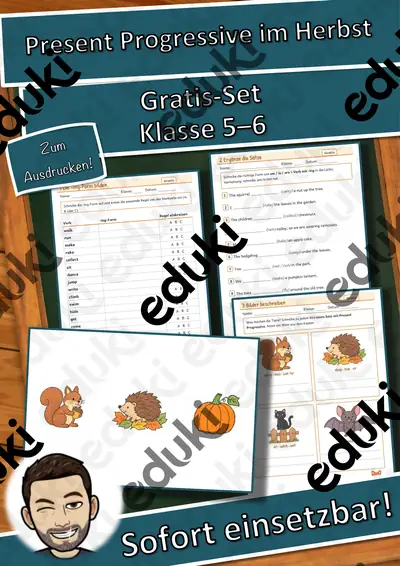
Englisch-Werkstatt: Present Progressive im Herbst – kostenlos, Klasse 5–6

Englisch-Werkstatt: Idioms: Englische Redewendungen – kostenlos, Klasse 3–4

Englisch-Werkstatt: I have, who has? Das Kartenspiel in der Schleife – kostenlos, Klasse 3–4
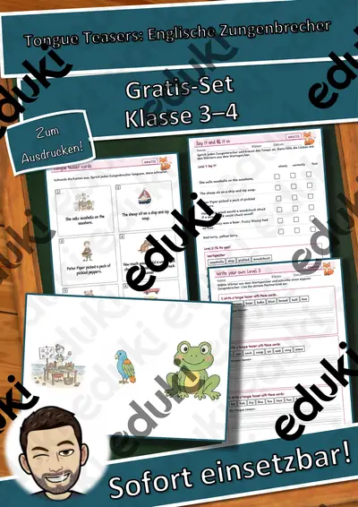
Englisch-Werkstatt: Tongue Teasers: Englische Zungenbrecher – kostenlos, Klasse 3–4
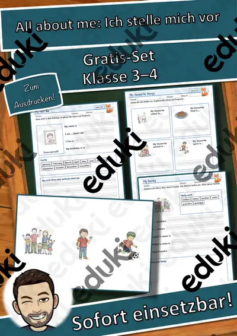
Englisch-Werkstatt: All about me: Ich stelle mich vor – kostenlos, Klasse 3–4
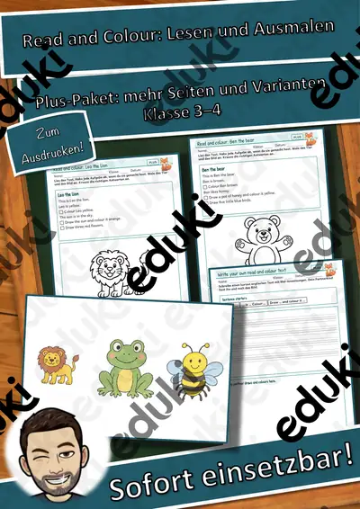
Englisch-Werkstatt: Read and Colour: Lesen und Ausmalen – kostenlos, Klasse 3–4

English Workshop: Read and Colour: Reading Practice – free, Grades 3–4

Englisch-Werkstatt: Idioms: Englische Redewendungen – Plus-Paket, Klasse 3–4

Englisch-Werkstatt: I have, who has? Das Kartenspiel in der Schleife – Plus-Paket, Klasse 3–4

Englisch-Werkstatt: Don't say it: Wörter beschreiben – kostenlos, Klasse 3–4

English Workshop: Idioms: Fun English Sayings – free, Grades 3–4

Englisch-Werkstatt: Tongue Teasers: Englische Zungenbrecher – Plus-Paket, Klasse 3–4

Englisch-Werkstatt: All about me: Ich stelle mich vor – Plus-Paket, Klasse 3–4
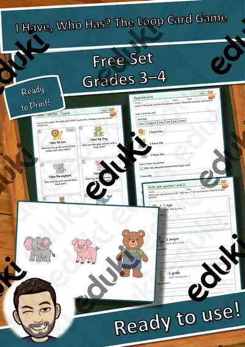
English Workshop: I Have, Who Has? The Loop Card Game – free, Grades 3–4
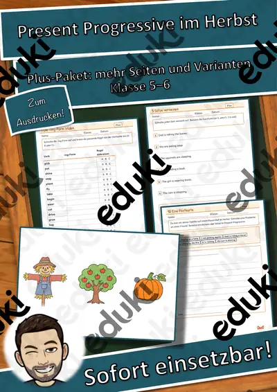
Englisch-Werkstatt: Present Progressive im Herbst – Plus-Paket, Klasse 5–6
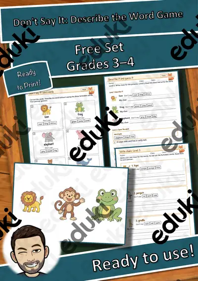
English Workshop: Don't Say It: Describe the Word Game – free, Grades 3–4
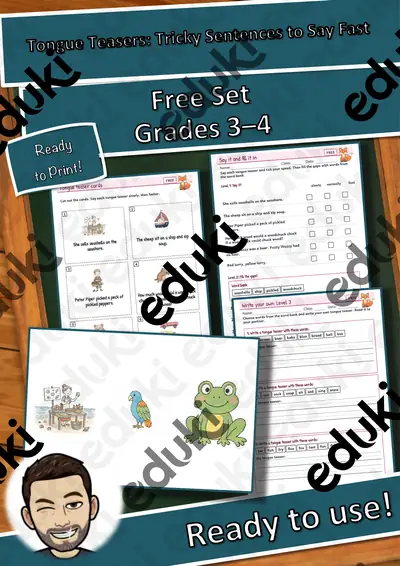
English Workshop: Tongue Teasers: Tricky Sentences to Say Fast – free, Grades 3–4

English Workshop: All about me: Introduce Yourself – free, Grades 3–4

English Workshop: Idioms: Fun English Sayings – Plus Pack, Grades 3–4

English Workshop: Read and Colour: Reading Practice – Plus Pack, Grades 3–4

Englisch-Werkstatt: Adjectives & Adverbs – Describing Words, Poster und Spiele, Kl. 3–4

English Workshop: Tongue Teasers: Tricky Sentences to Say Fast – Plus Pack, Grades 3–4

English Workshop: I Have, Who Has? The Loop Card Game – Plus Pack, Grades 3–4

English Workshop: Don't Say It: Describe the Word Game – Plus Pack, Grades 3–4

English Workshop: All about me: Introduce Yourself – Plus Pack, Grades 3–4

Klassenarbeitstrainer Englisch Klasse 7 Present Perfect und Future Forms

Klassenarbeitstrainer Englisch Klasse 6 – Simple Past und Present Progressive

English-speaking countries – Steckbriefe Englisch (12 Länder mit Flaggen, A2, differenziert, mit Lösungen)

MSA Englisch Klasse 10 Probeprüfung: Reading, Mediation, Writing (B1) mit Lösungen

VERA 8 Englisch Probetest Reading Klasse 8 – Leseverstehen A2/B1 mit Lösungen

Materialpaket Steckbriefe Bundesstaaten der Vereinigten Staaten von Amerika #demokratiestärken

Steckbrief Wyoming - Bundesstaat der Vereinigten Staaten

Steckbrief Wisconsin - Bundesstaat der Vereinigten Staaten

Steckbrief West Virginia - Bundesstaat der Vereinigten Staaten

Steckbrief Washington - Bundesstaat der Vereinigten Staaten

Steckbrief Virginia - Bundesstaat der Vereinigten Staaten

Steckbrief Vermont - Bundesstaat der Vereinigten Staaten

Steckbrief Utah - Bundesstaat der Vereinigten Staaten

Steckbrief Texas - Bundesstaat der Vereinigten Staaten

Steckbrief Tennessee - Bundesstaat der Vereinigten Staaten

Steckbrief South Dakota - Bundesstaat der Vereinigten Staaten

Steckbrief South Carolina - Bundesstaat der Vereinigten Staaten

Steckbrief Rhode Island - Bundesstaat der Vereinigten Staaten

Steckbrief Pennsylvania - Bundesstaat der Vereinigten Staaten

Steckbrief Oregon - Bundesstaat der Vereinigten Staaten

Steckbrief Oklahoma - Bundesstaat der Vereinigten Staaten

Steckbrief Ohio - Bundesstaat der Vereinigten Staaten

Steckbrief North Dakota - Bundesstaat der Vereinigten Staaten

Steckbrief North Carolina - Bundesstaat der Vereinigten Staaten

Steckbrief New York - Bundesstaat der Vereinigten Staaten

Steckbrief New Mexico - Bundesstaat der Vereinigten Staaten

Steckbrief New Jersey - Bundesstaat der Vereinigten Staaten

Steckbrief New Hampshire - Bundesstaat der Vereinigten Staaten

Steckbrief Nevada - Bundesstaat der Vereinigten Staaten

Steckbrief Nebraska - Bundesstaat der Vereinigten Staaten

Steckbrief Montana - Bundesstaat der Vereinigten Staaten

Steckbrief Missouri - Bundesstaat der Vereinigten Staaten

Steckbrief Mississippi - Bundesstaat der Vereinigten Staaten

Steckbrief Minnesota - Bundesstaat der Vereinigten Staaten

Steckbrief Michigan - Bundesstaat der Vereinigten Staaten

Steckbrief Massachusetts - Bundesstaat der Vereinigten Staaten

Steckbrief Maryland - Bundesstaat der Vereinigten Staaten

Steckbrief Maine - Bundesstaat der Vereinigten Staaten

Steckbrief Louisiana - Bundesstaat der Vereinigten Staaten

Steckbrief Kentucky - Bundesstaat der Vereinigten Staaten

Steckbrief Kansas - Bundesstaat der Vereinigten Staaten

Steckbrief Kalifornien - Bundesstaat der Vereinigten Staaten

Steckbrief Iowa - Bundesstaat der Vereinigten Staaten

Steckbrief Indiana - Bundesstaat der Vereinigten Staaten

Steckbrief Illinois - Bundesstaat der Vereinigten Staaten

Steckbrief Idaho - Bundesstaat der Vereinigten Staaten

Steckbrief Hawaii - Bundesstaat der Vereinigten Staaten

Steckbrief Georgia - Bundesstaat der Vereinigten Staaten

Steckbrief Florida - Bundesstaat der Vereinigten Staaten

Steckbrief Delaware - Bundesstaat der Vereinigten Staaten

Steckbrief Connecticut - Bundesstaat der Vereinigten Staaten

Steckbrief Colorado - Bundesstaat der Vereinigten Staaten

Steckbrief Arkansas - Bundesstaat der Vereinigten Staaten

Steckbrief Arizona - Bundesstaat der Vereinigten Staaten

Steckbrief Alaska - Bundesstaat der Vereinigten Staaten

Steckbrief Alabama - Bundesstaat der Vereinigten Staaten

Artist profile William Turner - English

Artist profile Wassily Kandinsky - English

Artist profile Vincent van Gogh - English

Artist profile Sandro Botticelli - English

Artist profile Salvador Dali - English

Artist profile Rembrandt van Rijn - English

Artist profile Pierre-Auguste Renoir - English

Artist profile Peter Paul Rubens - English

Artist profile Paul Klee - English

Artist profile Paul Gauguin - English

Artist profile Paul Cézanne - English

Artist profile Pablo Picasso - English

Artist profile Michelangelo Caravaggio - English

Artist profile Michelangelo (Buonarroti) - English

Artist profile Max Liebermann - English

Artist profile Marc Chagall - English

Artist profile Leonardo da Vinci - English

Artist profile Joan Miró - English

Artist profile Jan Vermeer - English

Artist profile Henri Matisse - English

Artist profile Gustav Klimt - English

Artist profile Giovanni Antonio Canal - English

Artist profile Franz Marc - English

Artist profile Francisco José de Goya - English

Artist profile Édouard Manet - English

Artist profile Edgar Degas - English

Artist profile Claude Monet - English

Artist profile Caspar David Friedrich - English

Artist profile Carl Spitzweg - English

Artist profile August Macke - English

Artist profile Andy Warhol - English

Artist profile Amedeo Modigliani - English

Artist profile Albrecht Dürer - English

Board material planets - English

Solar system - material package solar system - English

Profile Neptune - solar system (Neptune) - English

Profile Uranus - solar system (Uranus) - English

Profile Saturn - solar system (Saturn) - English

Profile Jupiter - solar system (Jupiter) - English

Profile Mars - solar system (Mars) - English

Profile Earth - solar system (Earth) - English

Profile Venus - solar system (Venus) - English

Profile Mercury - solar system (Mercury) - English

Profile Sun - solar system (Sun) - English

Fish and Chips Vokabeltraining (auch Homeschooling)
Keine Materialien gefunden – versuch einen anderen Suchbegriff oder Filter.